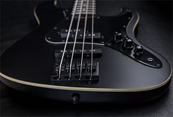

Step 1 - Choosing an instrument
Before you can start playing you have to get an instrument to play on. Many say as first bass guitar you should get a cheap one. To be honest, it doesn't really matter if you get a cheap one or not, in the beginning they are not going to sound especially different. Buying a cheap one can be a safer bet if you're not sure if you will continue playing. There are also a few of different types to choose from but it doesn't matter so much in the beginning either. Just pick one you think looks good and get started
Before you can start playing you have to get an instrument to play on. Many say as first bass guitar you should get a cheap one. To be honest, it doesn't really matter if you get a cheap one or not, in the beginning they are not going to sound especially different. Buying a cheap one can be a safer bet if you're not sure if you will continue playing. There are also a few of different types to choose from but it doesn't matter so much in the beginning either. Just pick one you think looks good and get started